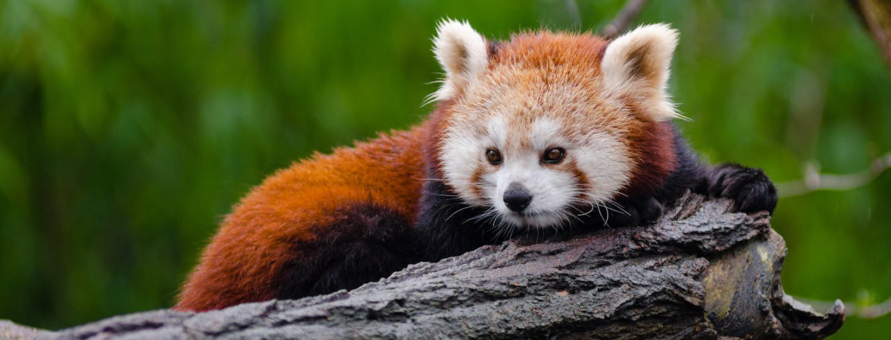

All About Red Pandas
These adorable red furry creatures live in the high forests of Asia. Although they are named pandas like the popular giant panda, they are not related. In fact, the red panda isn't a bear, but are in a class of their own - the Ailuridae. Let's take a look at some details about this fascinating animal.
Where They Live
Red pandas live in the Himalayas of China across to Nepal, Burma, Tibet, and India high up in forests with mild temperatures.
What They Eat
They eat a diet of 95% bamboo focusing on the nutritious leaf tips and tender shoots.

Their Physique
Red pandas are small in size weighing between 8 and 17 pounds and just over 2 feet long. Their red, black, and beige fur coat has a thick woolly undercoat and provides camouflage. They wrap their long, bushy tails around them like blankets during harsh weather.
How They Socialize
They are solo creatures except during mating season. They live in solitude with their home area ranging around 1 square mile.
How They Breed
From January to March is their breeding season in the Northern Hemisphere while June to April is breeding season in the Southern Hemisphere. It's common for red pandas to have two cubs per litter born between May and July in the Northern Hemisphere. The cubs stay with the mother about a year when they are fully grown.